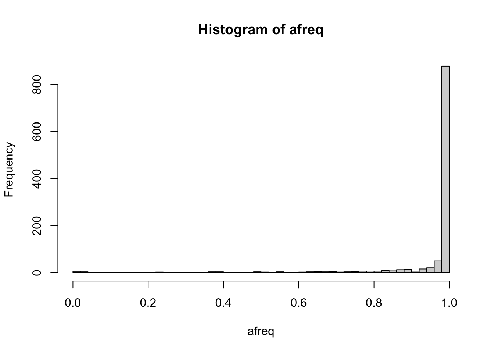

2 GDS format
GDS is Genomic Data Structure, a storage format that can efficiently store genomic data and provide fast random access to subsets of the data. For more information on GDS for sequence data, read the SeqArray package vignette.
2.1 Convert a VCF to GDS
To use the R packages developed at the University of Washington Genetic Analysis Center for sequence data, we first need to convert a VCF file to GDS. (If the file is BCF, use https://samtools.github.io/bcftools/bcftools.html to convert to VCF.)
library(SeqArray)
repo_path <- "https://github.com/UW-GAC/SISG_2021/raw/master"
if (!dir.exists("data")) dir.create("data")
vcffile <- "data/1KG_phase3_subset_chr1.vcf.gz"
if (!file.exists(vcffile)) download.file(file.path(repo_path, vcffile), vcffile)
gdsfile <- "data/1KG_phase3_subset_chr1.gds"
# convert the VCF to GDS
seqVCF2GDS(vcffile, gdsfile, fmt.import="GT", storage.option="LZMA_RA")## Tue Jul 20 17:39:19 2021
## Variant Call Format (VCF) Import:
## file(s):
## 1KG_phase3_subset_chr1.vcf.gz (120.7K)
## file format: VCFv4.1
## genome reference: ftp://ftp.1000genomes.ebi.ac.uk//vol1/ftp/technical/reference/phase2_reference_assembly_sequence/hs37d5.fa.gz
## the number of sets of chromosomes (ploidy): 2
## the number of samples: 1,126
## genotype storage: bit2
## compression method: LZMA_RA
## # of samples: 1126
## Output:
## data/1KG_phase3_subset_chr1.gds
## Parsing '1KG_phase3_subset_chr1.vcf.gz':
## + genotype/data { Bit2 2x1126x1121 LZMA_ra(0.01%), 42B }
## Digests:
## sample.id [md5: 6b04799356320063276ad84f70713429]
## variant.id [md5: 35a6feaa59ff5659e2d16d2afb6923d4]
## position [md5: 868601c0a2f333d113be2040295602b4]
## chromosome [md5: 774667f087db893e987ce02dc9188ee2]
## allele [md5: bb36e628c2faf01dfc2792615b6c2350]
## genotype [md5: 59be1f80c30eee4a93b82077530eba87]
## phase [md5: ae6a90ef5cceae947052b0c8999a4a94]
## annotation/id [md5: 045802d7856c955f4710288e4764fcbe]
## annotation/qual [md5: d6b8ed9bd5cac7dd7898bb679675fc7c]
## annotation/filter [md5: 8294edaf60fffc1e9aa693b4bc423dd1]
## Done.
## Tue Jul 20 17:39:20 2021
## Optimize the access efficiency ...
## Clean up the fragments of GDS file:
## open the file 'data/1KG_phase3_subset_chr1.gds' (71.3K)
## # of fragments: 123
## save to 'data/1KG_phase3_subset_chr1.gds.tmp'
## rename 'data/1KG_phase3_subset_chr1.gds.tmp' (70.5K, reduced: 744B)
## # of fragments: 61
## Tue Jul 20 17:39:20 20212.2 Exploring a GDS file
We can interact with the GDS file using the SeqArray package.
# open a connection to the GDS file
gds <- seqOpen(gdsfile)
gds## Object of class "SeqVarGDSClass"
## File: /Users/mconomos/Documents/SISG_2021/data/1KG_phase3_subset_chr1.gds (70.5K)
## + [ ] *
## |--+ description [ ] *
## |--+ sample.id { Str8 1126 LZMA_ra(9.66%), 877B } *
## |--+ variant.id { Int32 1120 LZMA_ra(17.5%), 793B } *
## |--+ position { Int32 1120 LZMA_ra(78.5%), 3.4K } *
## |--+ chromosome { Str8 1120 LZMA_ra(4.55%), 109B } *
## |--+ allele { Str8 1120 LZMA_ra(26.0%), 1.2K } *
## |--+ genotype [ ] *
## | |--+ data { Bit2 2x1126x1121 LZMA_ra(8.34%), 51.4K } *
## | |--+ extra.index { Int32 3x0 LZMA_ra, 18B } *
## | \--+ extra { Int16 0 LZMA_ra, 18B }
## |--+ phase [ ]
## | |--+ data { Bit1 1126x1120 LZMA_ra(0.11%), 177B } *
## | |--+ extra.index { Int32 3x0 LZMA_ra, 18B } *
## | \--+ extra { Bit1 0 LZMA_ra, 18B }
## |--+ annotation [ ]
## | |--+ id { Str8 1120 LZMA_ra(40.4%), 3.6K } *
## | |--+ qual { Float32 1120 LZMA_ra(2.46%), 117B } *
## | |--+ filter { Int32,factor 1120 LZMA_ra(2.46%), 117B } *
## | |--+ info [ ]
## | \--+ format [ ]
## \--+ sample.annotation [ ]The seqGetData function is the basic function for reading in data from a GDS file
# the unique sample identifier comes from the VCF header
sample.id <- seqGetData(gds, "sample.id")
length(sample.id)## [1] 1126head(sample.id)## [1] "HG00096" "HG00097" "HG00099" "HG00100" "HG00101" "HG00102"# a unique integer ID is assigned to each variant
variant.id <- seqGetData(gds, "variant.id")
length(variant.id)## [1] 1120head(variant.id)## [1] 1 2 3 4 5 6chr <- seqGetData(gds, "chromosome")
head(chr)## [1] "1" "1" "1" "1" "1" "1"pos <- seqGetData(gds, "position")
head(pos)## [1] 970546 985900 1025045 1265550 1472676 1735725id <- seqGetData(gds, "annotation/id")
head(id)## [1] "" "rs17160776" "" "" "rs78293298" ""There are additional useful functions for summary level data.
# reference allele frequency of each variant
afreq <- seqAlleleFreq(gds)
head(afreq)## [1] 0.9960036 0.9507105 0.9995560 0.9991119 0.9928952 0.9977798summary(afreq)## Min. 1st Qu. Median Mean 3rd Qu. Max.
## 0.0000 0.9866 0.9987 0.9436 0.9996 1.0000hist(afreq, breaks=50)
We can define a filter on the gds object. After using the seqSetFilter command, all subsequent reads from the gds object are restricted to the selected subset of data, until a new filter is defined or seqResetFilter is called.
seqSetFilter(gds, variant.id=91:100, sample.id=sample.id[1:5])## # of selected samples: 5
## # of selected variants: 10Genotype data is stored in a 3-dimensional array, where the first dimension is always length 2 for diploid genotypes. The second and third dimensions are samples and variants, respectively. The values of the array denote alleles: 0 is the reference allele and 1 is the alternate allele. For multiallelic variants, other alternate alleles are represented as integers > 1.
geno <- seqGetData(gds, "genotype")
dim(geno)## [1] 2 5 10geno[,,1:2]## , , 1
##
## sample
## allele [,1] [,2] [,3] [,4] [,5]
## [1,] 1 1 1 1 1
## [2,] 1 1 1 1 1
##
## , , 2
##
## sample
## allele [,1] [,2] [,3] [,4] [,5]
## [1,] 0 0 0 0 0
## [2,] 0 1 0 0 1The SeqVarTools package has some additional functions for interacting with SeqArray-format GDS files. There are functions providing more intuitive ways to read in genotypes.
library(SeqVarTools)
# return genotypes in matrix format
getGenotype(gds)## variant
## sample 91 92 93 94 95 96 97 98 99 100
## HG00096 "1|1" "0|0" "0|0" "0|0" "0|0" "0|0" "0|0" "1|1" "0|0" "0|0"
## HG00097 "1|1" "0|1" "0|0" "0|0" "0|0" "0|0" "0|0" "1|0" "0|0" "0|0"
## HG00099 "1|1" "0|0" "0|0" "0|0" "0|0" "0|0" "0|0" "1|0" "0|0" "0|0"
## HG00100 "1|1" "0|0" "0|0" "0|0" "0|0" "0|0" "0|0" "0|0" "0|0" "0|0"
## HG00101 "1|1" "0|1" "0|0" "0|0" "0|0" "0|0" "0|0" "0|0" "0|0" "0|0"getGenotypeAlleles(gds)## variant
## sample 91 92 93 94 95 96 97 98 99 100
## HG00096 "G|G" "T|T" "G|G" "G|G" "G|G" "A|A" "C|C" "G|G" "C|C" "T|T"
## HG00097 "G|G" "T|C" "G|G" "G|G" "G|G" "A|A" "C|C" "G|C" "C|C" "T|T"
## HG00099 "G|G" "T|T" "G|G" "G|G" "G|G" "A|A" "C|C" "G|C" "C|C" "T|T"
## HG00100 "G|G" "T|T" "G|G" "G|G" "G|G" "A|A" "C|C" "C|C" "C|C" "T|T"
## HG00101 "G|G" "T|C" "G|G" "G|G" "G|G" "A|A" "C|C" "C|C" "C|C" "T|T"refDosage(gds)## variant
## sample 91 92 93 94 95 96 97 98 99 100
## HG00096 0 2 2 2 2 2 2 0 2 2
## HG00097 0 1 2 2 2 2 2 1 2 2
## HG00099 0 2 2 2 2 2 2 1 2 2
## HG00100 0 2 2 2 2 2 2 2 2 2
## HG00101 0 1 2 2 2 2 2 2 2 2altDosage(gds)## variant
## sample 91 92 93 94 95 96 97 98 99 100
## HG00096 2 0 0 0 0 0 0 2 0 0
## HG00097 2 1 0 0 0 0 0 1 0 0
## HG00099 2 0 0 0 0 0 0 1 0 0
## HG00100 2 0 0 0 0 0 0 0 0 0
## HG00101 2 1 0 0 0 0 0 0 0 0There are functions to extract variant information.
# look at reference and alternate alleles
refChar(gds)## [1] "A" "T" "G" "G" "G" "A" "C" "C" "C" "T"altChar(gds)## [1] "G" "C" "A" "A" "A" "G" "T" "G" "A" "C"# data.frame of variant information
variantInfo(gds)## variant.id chr pos ref alt
## 1 91 1 15461365 A G
## 2 92 1 15817319 T C
## 3 93 1 16150840 G A
## 4 94 1 16272296 G A
## 5 95 1 16300899 G A
## 6 96 1 16353896 A G
## 7 97 1 16414772 C T
## 8 98 1 16446764 C G
## 9 99 1 16448267 C A
## 10 100 1 16699413 T C# reset the filter to all variants and samples
seqResetFilter(gds)## # of selected samples: 1,126
## # of selected variants: 1,120# how many alleles for each variant?
n <- seqNumAllele(gds)
table(n)## n
## 2 3 4
## 1099 20 1# some variants have more than one alternate allele
multi.allelic <- which(n > 2)
altChar(gds)[multi.allelic]## [1] "GT,G" "G,T" "A,T" "A,T" "ATG,ATGTG" "C,G" "A,T" "C,T" "A,C"
## [10] "TAA,T" "GTTA,GTTT" "GCC,GCCC,G" "A,C" "A,C" "A,C" "CAAGCAT,CGAGCAT" "CATTATT,C" "AT,C"
## [19] "TGTGA,C" "CCATT,CCATTCATT" "C,G"# extract a particular alternate allele
# first alternate
altChar(gds, n=1)[multi.allelic]## [1] "GT" "G" "A" "A" "ATG" "C" "A" "C" "A" "TAA" "GTTA" "GCC" "A" "A" "A" "CAAGCAT"
## [17] "CATTATT" "AT" "TGTGA" "CCATT" "C"# second alternate
altChar(gds, n=2)[multi.allelic]## [1] "G" "T" "T" "T" "ATGTG" "G" "T" "T" "C" "T" "GTTT" "GCCC" "C"
## [14] "C" "C" "CGAGCAT" "C" "C" "C" "CCATTCATT" "G"# how many variants are biallelic SNVs?
table(isSNV(gds, biallelic=TRUE))##
## FALSE TRUE
## 110 1010# how many variants are SNVs vs INDELs?
table(isSNV(gds, biallelic=FALSE))##
## FALSE TRUE
## 99 1021# 11 SNVs are multi-allelicWe can also return variant information as a GRanges object from the GenomicRanges package. This format for representing sequence data is common across many Bioconductor packages. Chromosome is stored in the seqnames column. The ranges column has variant position, which can be a single base pair or a range.
gr <- granges(gds)
gr## GRanges object with 1120 ranges and 0 metadata columns:
## seqnames ranges strand
## <Rle> <IRanges> <Rle>
## 1 1 970546 *
## 2 1 985900 *
## 3 1 1025045 *
## 4 1 1265550 *
## 5 1 1472676 *
## ... ... ... ...
## 1116 1 248715186 *
## 1117 1 248715606-248715610 *
## 1118 1 248761613 *
## 1119 1 248894546 *
## 1120 1 249149558 *
## -------
## seqinfo: 1 sequence from an unspecified genome; no seqlengthsAlways use the seqClose command to close your connection to a GDS file when you are done working with it. Trying to open an already opened GDS will result in an error.
seqClose(gds)2.3 Exercises
Set a filter selecting only multi-allelic variants. Inspect their genotypes using the different methods you learned above. Use the
alleleDosagemethod to find dosage for the second (and third, etc.) alternate allele.Use the
hwefunction in SeqVarTools to run a Hardy-Weinberg Equilibrium test on each variant. Identify a variant with low p-value and inspect its genotypes. (Note that the HWE test is only valid for biallelic variants, and will returnNAfor multiallelic variants.)
2.4 Solutions
- Set a filter selecting only multi-allelic variants. Inspect their genotypes using the different methods you learned above. Use the
alleleDosagemethod to find dosage for the second (and third, etc.) alternate allele.
# open a connection to the GDS file again
gds <- seqOpen(gdsfile)
# set your filter
seqSetFilter(gds, variant.sel=multi.allelic)## # of selected variants: 21geno <- seqGetData(gds, "genotype")
dim(geno)## [1] 2 1126 21geno[,1:5,1:5]## , , 1
##
## sample
## allele [,1] [,2] [,3] [,4] [,5]
## [1,] 1 1 0 1 1
## [2,] 0 1 1 1 1
##
## , , 2
##
## sample
## allele [,1] [,2] [,3] [,4] [,5]
## [1,] 0 0 0 0 0
## [2,] 0 0 0 0 0
##
## , , 3
##
## sample
## allele [,1] [,2] [,3] [,4] [,5]
## [1,] 0 0 0 0 0
## [2,] 0 0 0 0 0
##
## , , 4
##
## sample
## allele [,1] [,2] [,3] [,4] [,5]
## [1,] 1 0 0 1 0
## [2,] 0 0 0 0 1
##
## , , 5
##
## sample
## allele [,1] [,2] [,3] [,4] [,5]
## [1,] 0 0 0 0 0
## [2,] 0 0 0 0 0geno <- getGenotype(gds)
dim(geno)## [1] 1126 21head(geno)## variant
## sample 30 69 73 161 162 195 243 253 407 431 434 610 627 645 689 756 765 814 988 1014 1056
## HG00096 "1|0" "0|0" "0|0" "1|0" "0|0" "0|0" "0|0" "0|0" "0|0" "1|0" "0|1" "3|3" "0|0" "0|0" "2|0" "2|2" "2|2" "0|0" "0|0" "0|0" "0|0"
## HG00097 "1|1" "0|0" "0|0" "0|0" "0|0" "0|0" "0|0" "0|0" "0|0" "2|2" "0|1" "1|3" "0|0" "0|0" "0|0" "2|2" "2|2" "0|0" "0|0" "0|0" "0|0"
## HG00099 "0|1" "0|0" "0|0" "0|0" "0|0" "0|0" "0|0" "0|0" "0|0" "0|0" "1|0" "1|3" "0|0" "0|0" "0|0" "2|2" "2|2" "0|0" "0|0" "0|0" "0|0"
## HG00100 "1|1" "0|0" "0|0" "1|0" "0|0" "0|0" "0|0" "0|0" "0|0" "0|2" "0|1" "1|1" "2|0" "0|0" "0|2" "2|2" "2|2" "0|0" "0|0" "0|0" "0|2"
## HG00101 "1|1" "0|0" "0|0" "0|1" "0|0" "0|0" "0|0" "0|0" "2|0" "1|1" "0|0" "3|0" "0|0" "0|0" "2|0" "2|2" "2|2" "0|0" "0|0" "1|0" "0|0"
## HG00102 "0|1" "0|0" "0|0" "1|0" "0|0" "0|0" "0|0" "0|0" "0|0" "2|2" "0|1" "3|3" "0|2" "0|0" "0|0" "2|2" "1|2" "0|0" "0|0" "0|1" "0|2"geno <- getGenotypeAlleles(gds)
head(geno)## variant
## sample 30 69 73 161 162 195 243 253 407 431 434 610 627 645 689 756 765 814 988
## HG00096 "GT|GTT" "A|A" "G|G" "A|G" "A|A" "A|A" "C|C" "G|G" "T|T" "TAA|TA" "G|GTTA" "G|G" "G|G" "G|G" "C|G" "CGAGCAT|CGAGCAT" "C|C" "CT|CT" "CGTGA|CGTGA"
## HG00097 "GT|GT" "A|A" "G|G" "G|G" "A|A" "A|A" "C|C" "G|G" "T|T" "T|T" "G|GTTA" "GCC|G" "G|G" "G|G" "G|G" "CGAGCAT|CGAGCAT" "C|C" "CT|CT" "CGTGA|CGTGA"
## HG00099 "GTT|GT" "A|A" "G|G" "G|G" "A|A" "A|A" "C|C" "G|G" "T|T" "TA|TA" "GTTA|G" "GCC|G" "G|G" "G|G" "G|G" "CGAGCAT|CGAGCAT" "C|C" "CT|CT" "CGTGA|CGTGA"
## HG00100 "GT|GT" "A|A" "G|G" "A|G" "A|A" "A|A" "C|C" "G|G" "T|T" "TA|T" "G|GTTA" "GCC|GCC" "C|G" "G|G" "G|C" "CGAGCAT|CGAGCAT" "C|C" "CT|CT" "CGTGA|CGTGA"
## HG00101 "GT|GT" "A|A" "G|G" "G|A" "A|A" "A|A" "C|C" "G|G" "C|T" "TAA|TAA" "G|G" "G|GC" "G|G" "G|G" "C|G" "CGAGCAT|CGAGCAT" "C|C" "CT|CT" "CGTGA|CGTGA"
## HG00102 "GTT|GT" "A|A" "G|G" "A|G" "A|A" "A|A" "C|C" "G|G" "T|T" "T|T" "G|GTTA" "G|G" "G|C" "G|G" "G|G" "CGAGCAT|CGAGCAT" "CATTATT|C" "CT|CT" "CGTGA|CGTGA"
## variant
## sample 1014 1056
## HG00096 "C|C" "A|A"
## HG00097 "C|C" "A|A"
## HG00099 "C|C" "A|A"
## HG00100 "C|C" "A|G"
## HG00101 "CCATT|C" "A|A"
## HG00102 "C|CCATT" "A|G"# count of reference alleles
dos <- refDosage(gds)
head(dos)## variant
## sample 30 69 73 161 162 195 243 253 407 431 434 610 627 645 689 756 765 814 988 1014 1056
## HG00096 1 2 2 1 2 2 2 2 2 1 1 0 2 2 1 0 0 2 2 2 2
## HG00097 0 2 2 2 2 2 2 2 2 0 1 0 2 2 2 0 0 2 2 2 2
## HG00099 1 2 2 2 2 2 2 2 2 2 1 0 2 2 2 0 0 2 2 2 2
## HG00100 0 2 2 1 2 2 2 2 2 1 1 0 1 2 1 0 0 2 2 2 1
## HG00101 0 2 2 1 2 2 2 2 1 0 2 1 2 2 1 0 0 2 2 1 2
## HG00102 1 2 2 1 2 2 2 2 2 0 1 0 1 2 2 0 0 2 2 1 1# count of *any* alternate alleles
dos <- altDosage(gds)
head(dos)## variant
## sample 30 69 73 161 162 195 243 253 407 431 434 610 627 645 689 756 765 814 988 1014 1056
## HG00096 1 0 0 1 0 0 0 0 0 1 1 2 0 0 1 2 2 0 0 0 0
## HG00097 2 0 0 0 0 0 0 0 0 2 1 2 0 0 0 2 2 0 0 0 0
## HG00099 1 0 0 0 0 0 0 0 0 0 1 2 0 0 0 2 2 0 0 0 0
## HG00100 2 0 0 1 0 0 0 0 0 1 1 2 1 0 1 2 2 0 0 0 1
## HG00101 2 0 0 1 0 0 0 0 1 2 0 1 0 0 1 2 2 0 0 1 0
## HG00102 1 0 0 1 0 0 0 0 0 2 1 2 1 0 0 2 2 0 0 1 1# count of the first alternate allele
dos <- alleleDosage(gds, n=1)
head(dos)## variant
## sample 30 69 73 161 162 195 243 253 407 431 434 610 627 645 689 756 765 814 988 1014 1056
## HG00096 1 0 0 1 0 0 0 0 0 1 1 0 0 0 0 0 0 0 0 0 0
## HG00097 2 0 0 0 0 0 0 0 0 0 1 1 0 0 0 0 0 0 0 0 0
## HG00099 1 0 0 0 0 0 0 0 0 0 1 1 0 0 0 0 0 0 0 0 0
## HG00100 2 0 0 1 0 0 0 0 0 0 1 2 0 0 0 0 0 0 0 0 0
## HG00101 2 0 0 1 0 0 0 0 0 2 0 0 0 0 0 0 0 0 0 1 0
## HG00102 1 0 0 1 0 0 0 0 0 0 1 0 0 0 0 0 1 0 0 1 0# count of the third alternate allele
dos <- alleleDosage(gds, n=3)
head(dos)## variant
## sample 30 69 73 161 162 195 243 253 407 431 434 610 627 645 689 756 765 814 988 1014 1056
## HG00096 0 0 0 0 0 0 0 0 0 0 0 2 0 0 0 0 0 0 0 0 0
## HG00097 0 0 0 0 0 0 0 0 0 0 0 1 0 0 0 0 0 0 0 0 0
## HG00099 0 0 0 0 0 0 0 0 0 0 0 1 0 0 0 0 0 0 0 0 0
## HG00100 0 0 0 0 0 0 0 0 0 0 0 0 0 0 0 0 0 0 0 0 0
## HG00101 0 0 0 0 0 0 0 0 0 0 0 1 0 0 0 0 0 0 0 0 0
## HG00102 0 0 0 0 0 0 0 0 0 0 0 2 0 0 0 0 0 0 0 0 0# count of *each* of the alternate alleles
# returns multiple columns per variant
dos <- expandedAltDosage(gds)
head(dos)## variant
## sample 30 30 69 69 73 73 161 161 162 162 195 195 243 243 253 253 407 407 431 431 434 434 610 610 610 627 627 645 645 689 689 756 756 765 765 814 814 988 988 1014
## HG00096 1 0 0 0 0 0 1 0 0 0 0 0 0 0 0 0 0 0 1 0 1 0 0 0 2 0 0 0 0 0 1 0 2 0 2 0 0 0 0 0
## HG00097 2 0 0 0 0 0 0 0 0 0 0 0 0 0 0 0 0 0 0 2 1 0 1 0 1 0 0 0 0 0 0 0 2 0 2 0 0 0 0 0
## HG00099 1 0 0 0 0 0 0 0 0 0 0 0 0 0 0 0 0 0 0 0 1 0 1 0 1 0 0 0 0 0 0 0 2 0 2 0 0 0 0 0
## HG00100 2 0 0 0 0 0 1 0 0 0 0 0 0 0 0 0 0 0 0 1 1 0 2 0 0 0 1 0 0 0 1 0 2 0 2 0 0 0 0 0
## HG00101 2 0 0 0 0 0 1 0 0 0 0 0 0 0 0 0 0 1 2 0 0 0 0 0 1 0 0 0 0 0 1 0 2 0 2 0 0 0 0 1
## HG00102 1 0 0 0 0 0 1 0 0 0 0 0 0 0 0 0 0 0 0 2 1 0 0 0 2 0 1 0 0 0 0 0 2 1 1 0 0 0 0 1
## variant
## sample 1014 1056 1056
## HG00096 0 0 0
## HG00097 0 0 0
## HG00099 0 0 0
## HG00100 0 0 1
## HG00101 0 0 0
## HG00102 0 0 1- Use the
hwefunction in SeqVarTools to run a Hardy-Weinberg Equilibrium test on each variant. Identify a variant with low p-value and inspect its genotypes. (Note that the HWE test is only valid for biallelic variants, and will returnNAfor multiallelic variants.)
# reset the filter to all variants
seqResetFilter(gds)## # of selected samples: 1,126
## # of selected variants: 1,120# run HWE test
hwe.res <- hwe(gds)
# identify variants with small p-values
lowp <- !is.na(hwe.res$p) & hwe.res$p < 1e-4
head(hwe.res[lowp,])## variant.id nAA nAa naa afreq p f
## 75 75 702 336 88 0.7726465 1.070663e-06 0.1506466
## 92 92 632 381 113 0.7304618 3.558878e-06 0.1407120
## 98 98 672 335 119 0.7455595 2.369695e-12 0.2158342
## 105 105 93 272 761 0.2033748 7.851777e-16 0.2544970
## 114 114 299 482 345 0.4795737 1.745346e-06 0.1424409
## 150 150 471 447 208 0.6167851 8.020208e-08 0.1602251# look at the genotypes of the most significant variant
minp <- which.min(hwe.res$p)
hwe.res[minp,]## variant.id nAA nAa naa afreq p f
## 608 608 76 1048 2 0.5328597 5.211823e-234 -0.8695311seqSetFilter(gds, variant.id=minp)## # of selected variants: 1table(getGenotype(gds))##
## 0|0 0|1 1|0 1|1
## 76 559 489 2table(altDosage(gds))##
## 0 1 2
## 76 1048 2Don’t forget to close your connection to the GDS file when you’re done!
seqClose(gds)